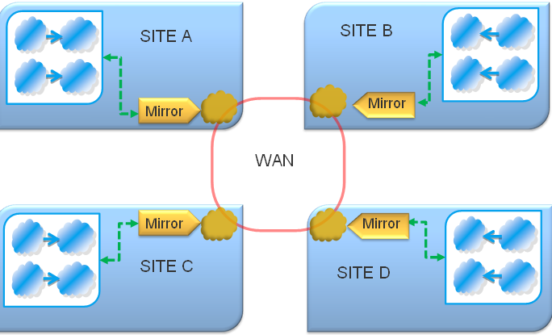

Section Summary: Data synchronization over the WAN.
Overview
The GigaSpaces WAN Gateway is a GigaSpaces Mirror Service that replicates all changes from one GigaSpaces cluster to one or more other clusters, over the WAN.
| Licensing The Wan Gateway requires a separate license in addition to the GigaSpaces commercial license. Please contact GigaSpaces Customer Support for more details. |

It uses the GigaSpaces Mirror service to asynchronously send bulks of updates that were performed in one cluster to one or more other remote clusters. This way, each site sends its data updates in an asynchronous manner to the other sites.
Main Features
The GigaSpaces WAN Gateway features the following:
- A single TCP/IP socket between each Gateway pair. Another socket is used for the lookup service activities.
- Each site may have different amount of partitions.
- Automatic lookup service startup. No need to start a lookup service for the gateway cluster.
- Federated cluster topologies support (line , Hub and spoke, Tree).
- Time to live (Leasing) support.
- Conflict resolution support.
- Secured connections support.
- Transaction delegation support.
Use Cases
The WAN features targets several common use cases described below. Please contact GigaSpaces Support if you have any questions about your specific scenario.
Disaster Recovery Site
The most common scenario is maintaining a disaster recovery site, so that in the event of a complete shutdown of the primary data center, the secondary will be immediately available to handle client requests using a GigaSpaces cluster that is updated with all but the most recent of the updates from the primary site.
Multiple Active Sites
Multiple active data centers process user requests and actively modify the information stored in the GigaSpaces cluster. The information is 'partitioned' across the different data centers so that each site modifies a separate subset of the data and these updates are propagated asynchronously to the other sites. It is the responsibility of the application to handle 'collisions', where two sites update the same object.
Design
This section describes the design of the WAN Mirror/Gateway as well as the main considerations that led to choosing this design.
Overview
The core of the design revolves around a replicated space available inside each Wan Gateway running in every site. Updates from a GigaSpaces cluster are sent to the mirror which writes the updates to the replicated space. Each write to the 'Wan' space is a log entry with an index comprised of the source site ID, the source partition ID (In a partitioned topology, primary nodes are responsible for sending modifications to the mirror for this partition) and a sequence number(counter). Each Gateway queries its replicated space and executes the updates in order against the local space cluster.
Maintaining Order among Updates
The order in which updates are executed is crucial for maintaining consistent state across the sites - the updates must be executed in the same order that they were performed on the original site. In a partitioned topology this order need only be maintained for each particular partition. (Note that this only holds if all updates in a transaction are executed on the same partition. See the Transactions section below for more details.)
Resonance Detection
Resonance (also known as the echo affect) in the context of the GigaSpaces WAN module refers to the possibility that an update will propagate from a source site to a destination site, but the change in the destination site will cause a new update to be sent out, sending the update back to the original source site again in an endless loop.
GigaSpaces detects 'resonant' updates by checking which client sent the update and drops updates that originated from the Wan Gateway itself.
Space Transactions
The Mirror Gateway can maintain the transaction semantics used in the client application that originally modified the space state. For instance, if a transaction wrote two new objects to the local space, the two objects will be part of the same bulk update that will be sent to the other remote sites. The Mirror Gateway in the other sites will also write the items in a single transaction to their local space cluster.
Even though a transaction was executed at the original source site using a single partition with a local transaction manager, the remote sites will use a distributed transaction as the remote sites may have a different number of partitions, changing the distribution of transaction objects across the partitions.
To configure the Wan Gateway to preserve transaction boundaries, set the space-config.mirror-service.operation-grouping property of the Mirror Gateway to group-by-space-transaction (see the Configuration section below).
Optimistic Locking
Optimistic Locking is useful in situations where you may have simultaneously concurrent conflicting updates to the same objects. GigaSpaces supports Optimistic Locking by maintaining a Version ID field when writing and updating the space object. This version allows the space to throw an exception when a non recent object version is used to update the space. The WAN Gateway, using this mechanism, detects these collisions and resolves them via a CollisionHandler implementation. The CollisionHandler implementation includes a callback method that is invoked once a collision is detected, allowing the WAN Gateway to make a decision about how to handle the collision. You may use the default CollisionHandler provided or implement a custom one to resolve conflicts.
To use your own CollisionHandler, simply implement the CollisionHandler interface and create a bean with your implementation in the pu.xml file. Your handler will be auto-wired to the WAN Gateway.
Object Lease
Object written to one of the sites with an expiration lease will be replicated to the other sites with the same lease expiration. Updating the object's lease via a GigaSpaces.write() on one site will also update the object's lease on the other site. However, updating the lease of an object by using the LeaseContext interface returned from a GigaSpace.write() (i.e. calling LeaseContext.renew()) operation will NOT be replicated to the other sites. This change in the lease will only be available at the site where the change was made. It is therefore recommended that lease changes should only be performed using the GigaSpace.write() API.
Considerations
In this section we will explain some of the design decisions made with the GigaSpaces WAN Gateway implementation.
Why Asynchronous Updates
As explained with the Clusters over the WAN section, you may implement synchronous updates over the WAN using GigaSpaces, but the price would be in the detrimental effect this would have on the performance of the local nodes. Any destructive operations (write,update,take) would be only as fast as the WAN link allowed (due to wan network latency). An asynchronous replication approach allows the local cluster to operate at its usual speed while still making best use of the WAN link available to propagate updates to the remote sites.
Recovery Scenarios
The WAN feature supports recovery from a failure of a Mirror service. This means that if a Mirror Gateway fails, all of the updates that should have been sent to this mirror and forwarded to remote sites, will be kept in the replicated space. Once the mirror restarts (usually happens implicitly via the GSM that will re-provision it into a running GSC), it will pick up the missing updates sent from the primary instances and process them.
As a result, if one site starts operation while the other is still down, the updates for the target site will remain pending until the site becomes active. See Controlling the Replication Redo Log for details on how to control the pending data waiting to be replicated. When the site starts up, its Mirror Gateway will process all the pending update requests.
Similarly, sporadic failures of the WAN link will not impact system performance. Once the link is reestablished, the replicated space will sync up to its partner targets.
 Recovery from the complete failure of a site, including its local cluster, is not supported by GigaSpaces. The application is expected to support a method to load an initial state into the newly started space.
Recovery from the complete failure of a site, including its local cluster, is not supported by GigaSpaces. The application is expected to support a method to load an initial state into the newly started space.
Synchronous vs. Asynchronous Replicated Cluster
The replicated space shared by all mirror gateways uses synchronous replication. This may seem counter-intuitive, as asynchronous communications are usually a better fit to the limited bandwidth and reliability of WAN links. However, in this case it is more important that the information stored in the replicated space be highly-available, so that the failure of any one Mirror Gateway will not pose a risk of data loss.
It is important to remember that there is already an asynchronous step in the WAN update procedure, due to the very nature of the mirror. In addition, if for some reason a write to the replicated space fails, the primary partition that sent the update will redo the update later, so that no information is lost.
Replication Throughput
The total amount of data a gateway can push out into remote sites (Total TP) depends on:
- Network speed - The amount of requests per seconds a process may perform with another process running in the remote site. This is basically relying on the latency between the local gateway and the remote gateway node (the one with the highest latency in case of multiple sites).
- Partition count - The amount of partitions the local cluster has.
- Partition activity Distribution - The distribution of activities across the site space cluster partitions.
- Partition TP - The Throughput of the primary sending operations into the Mirror.
- Replication Frequency - The async replication frequency between the primary and the Mirror.
Total TP = (Partition TP X Partitions count X Distribution X Network Speed)/ Replication Frequency
This means that if we have 10 partitions, each sending 5000 objects/sec into the mirror with a replication frequency of 10 replication cycles per/sec (100 ms delay between each replication cycle , i.e. 1000 operations per batch) with even distribution (1) and network speed between the sites is 10 requests/sec (i.e. 100 ms latency) the Total TP we will have is:
(10 X 5000 X 1 X 10) / 10 = 50,000 objects per second.
Securing the WAN Communications
By default, the replicated space is not secured, so update information travels over the wire un-encrypted. As long as a VPN (or an alternative means of securing the WAN communications) is available, this should not be a problem. Otherwise, the replicated space should be configured with SSL Encryption, as described here: Securing the Transport Layer (using SSL)
WAN Replication Eviction
The WAN Gateway writes all destructive operations performed on its local cluster to a Space Cluster so that the changes in the cluster are available to all the other WAN gateways. Entries written to this WAN Space Cluster will be evicted in an LRU order so that the WAN Gateways will not run out of memory. See below for more details.
Setting up and Configuring the GigaSpaces WAN Gateway
Setting up the GigaSpaces WAN Mirror/Gateway requires deploying a processing unit with a pu.xml file that contains the information required to configure the gateway and the gs-wan.jar file in the processing unit's lib directory. This PU includes the mirror definition for the local site's cluster, including the Data Source definitions (See example below). That means that the local space cluster must be set to use the mirror. See Asynchronous Persistency with the Mirror for more details.
<?xml version="1.0" encoding="UTF-8"?> <beans xmlns="http://www.springframework.org/schema/beans" xmlns:xsi="http://www.w3.org/2001/XMLSchema-instance" xmlns:os-core="http://www.openspaces.org/schema/core" xmlns:os-events="http://www.openspaces.org/schema/events" xmlns:os-remoting="http://www.openspaces.org/schema/remoting" xmlns:os-sla="http://www.openspaces.org/schema/sla" xsi:schemaLocation="http://www.springframework.org/schema/beans http://www.springframework.org/schema/beans/spring-beans.xsd http://www.openspaces.org/schema/core http://www.openspaces.org/schema/core/openspaces-core.xsd http://www.openspaces.org/schema/events http://www.openspaces.org/schema/events/openspaces-events.xsd http://www.openspaces.org/schema/remoting http://www.openspaces.org/schema/remoting/openspaces-remoting.xsd http://www.openspaces.org/schema/sla http://www.openspaces.org/schema/sla/openspaces-sla.xsd"> <bean class="org.springframework.beans.factory.annotation.RequiredAnnotationBeanPostProcessor"/> <bean id="propertiesConfigurer" class="org.springframework.beans.factory.config.PropertyPlaceholderConfigurer"> <property name="properties"> <props> <prop key="cleanupTaskInterval">60000</prop> </props> </property> </bean> <bean id="locations" class="org.springframework.beans.factory.config.ListFactoryBean"> <property name="sourceList"> <list> <bean id="loc1" class="com.gigaspaces.wan.LocationConfiguration" > <property name="host" value="192.168.9.48" /> <property name="discoveryPort" value="10001" /> <property name="replicationPort" value="10002" /> <property name="name" value="Site 1" /> </bean> <bean id="loc2" class="com.gigaspaces.wan.LocationConfiguration" > <property name="host" value="10.10.10.250" /> <property name="discoveryPort" value="20001" /> <property name="replicationPort" value="20002" /> <property name="name" value="Site 2" /> </bean> </list> </property> </bean> <!-- An external data source that will be --> <!-- responsible for sending data over the WAN --> <bean id="wanDataSource" class="com.gigaspaces.wan.WanDataSource" init-method="initialize"> <property name="localClusterSpaceUrl" value="jini://*/*/site1Space" /> <property name="wanSpaceUrl" value="/./wanSpace?cluster_schema=sync_replicated" /> <property name="wanLookupGroup" value="WAN_CLUSTER" /> <property name="locations" ref="locations" /> <property name="mySiteId" value="1" /> </bean> <!-- The mirror Gateway--> <os-core:space id="mirrorSpace" url="${mirrorURL}" schema="mirror" external-data-source="wanDataSource"> <os-core:properties> <props> <prop key="space-config.external-data-source.data-class"> com.gigaspaces.internal.transport.EntryPacket</prop> <prop key="space-config.mirror-service.cluster.name">site1Space</prop> <prop key="space-config.mirror-service.cluster.partitions">1</prop> <prop key="space-config.mirror-service.cluster.backups-per-partition">1</prop> </props> </os-core:properties> </os-core:space> </beans>
 Your processing unit must include the gs-wan.jar file in its lib directory. The gs-wan.jar is available in <GigaSpaces Install Dir>/lib/optional/wan.
Your processing unit must include the gs-wan.jar file in its lib directory. The gs-wan.jar is available in <GigaSpaces Install Dir>/lib/optional/wan.
Required Parameters
| Bean | Property | Description |
|---|---|---|
| wanDataSource | localClusterSpaceUrl | Space URL for the local's site Space. |
| wanDataSource | locations | List of locations where the mirror gateways of all sites are available. List must contain at least two entries, including the entry for this site. |
| space | cluster.name | Name of the cluster that this Mirror serves. (See new replication details) |
| space | cluster.partitions | Number of partitions in the cluster that this Mirror serves. (See new replication details) |
| space | cluster.backups-per-partition | Number of backups per partition in the cluster that this Mirror serves. (See new replication details) |
Optional Parameters
| Bean | Property | Description | Default Value |
|---|---|---|---|
| wanDataSource | wanSpaceUrl | URL for the WAN Space | /./wanSpace?cluster_schema=sync_replicated |
| wanDataSource | mySiteId | 1-Based index of this site in the locations list | Not Mandatory. It may be useful to run multiple mirror Gateways on the same host for testing purposes. In such cases the mySiteId property must also be set. |
| wanDataSource | numberOfPartitions | Number of Partitions in local cluster | Not Mandatory if Service Grid is used, see below |
| wanDataSource | wanAdditionalLocators | Locators added to wan space URL | Useful for monitoring the Wan Space in a testing environment |
| wanDataSource | wanLookupGroup | Lookup Group used by WAN Space Cluster | Defaults to WAN_CLUSTER |
| wanDataSource | wanSpaceProperties | Additional Properties used to initialize the WAN space cluster. Used for Performance Tuning. | |
| space | space-config.mirror-service.operation-grouping | See Asynchronous Persistency with the Mirror | Defaults to group-by-replication-bulk. Change to group-by-space-transaction to maintain transaction boundaries after WAN replication |
Note: Each site is assigned a 1-based index, according to the list of locations in the (identical) configuration available in each site. When the mirror starts, it will attempt to match its own IP/Host to the list and set its index accordingly. However, it is possible that the details in the configuration will not match the ones available to the host operating system (For instance, the configuration may include WAN addresses). In such cases the 'mySiteId' property must be set in the pu.xml file.
Performance Tuning
The GigaSpaces WAN Gateway uses the GigaSpaces Mirror service to receive updates of all changes performed in the local site. All performance settings relevant for the mirror are also relevant to the WAN Gateway. In general, larger replication bulks are more efficient, especially considering the latency and limited bandwidth of the WAN link.
Considerations
Static Configuration
The number of sites and the location of their gateway (host, discovery port and replication port) must be available (and identical) in each of the sites. Dynamically adding sites is not supported at this time.
Each mirror gateway requires bi-directional communications with all of the other mirror gateways. As such communications goes over the WAN, some configuration of IT infrastructure (i.e. Firewalls, NATs) may be required.
Configuring the number of Partitions in a Local Site
The mirror gateway must know the number of partitions in the local site's space cluster as part of its processing. If the space is deployed using the GigaSpaces Service Grid, the number of partitions is available via the Admin API. However, if the service grid is not used (i.e. the space is running in embedded mode in a container other then the GigaSpaces container), the Admin API can't tell how many partitions are used. In this case, the 'numberOfPartitions' property must be set in the Data Source bean (see wanDataSource in the example below).
Multi-Partition Transactions in a Local Site
Multi-partition transactions are not currently supported by the WAN Gateway. In such a case, each of the updates to the different partitions would be considered a single transaction and handled accordingly.
Open Issues
This section describes the currently open issues in this feature, and possible solutions for them.
Deleting old Updates
Once an update is performed on all target sites, there is no longer any need to leave it in the replicated space. The space will eventually delete old objects in an LRU manner, but while they remain they could potentially slow down the recovery of a mirror service that crashed (it would need to sync up with the current state of the replicated space, including the old ones).
A periodic clean up task could collect the current execution state of all sites and remove any entries that are no longer useful from the space. This feature has not been developed yet, though it may be added to a later release.
Writing Space updates to a Database
A GigaSpaces cluster can have at most one mirror. If an application requires both asynchronous persistence and WAN replication, it can only use one mirror to do both. You may extend the WAN Gateway's implementation class com.gigaspaces.wan.WanDataSource and add any additional functionality you require. A simple implementation can override the executeBulk() method, add any persistence implementation you require and then call the parent class' executeBulk() method.
Previous WAN Replication Module
GigaSpaces also supports disk based WAN replication, which is an older implementation for replicating data over the WAN. For more details about this implementation and support options for it, please contact the GigaSpaces team.